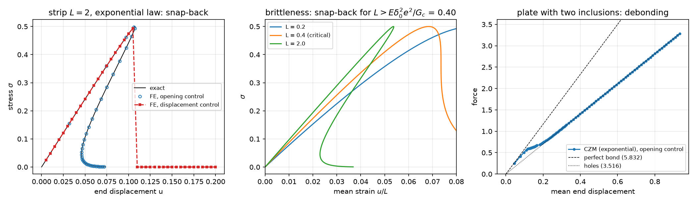
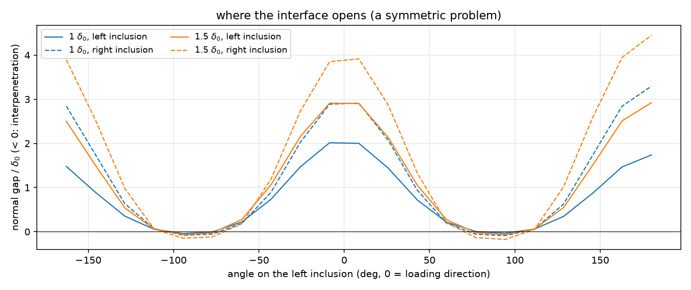
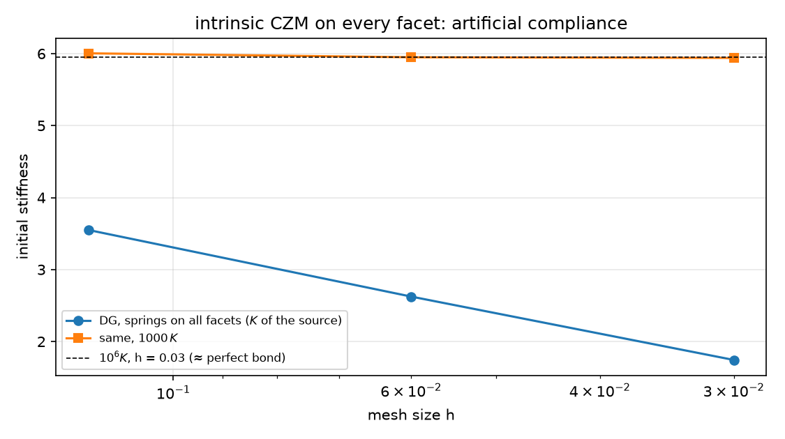

AI-based Materials and Process Simulation II
Week 10 — Cohesive Interfaces: Traction–Separation Laws, Submeshes, Snap-back and Path Following
Process Systems Laboratory
Department of Chemical and Biomolecular Engineering, SeoulTech
Today
| Part | Topic | Time |
|---|---|---|
| Quiz on Week 9 (closed-AI) | 10 min | |
| A | Cohesive zones — traction–separation laws, G_c, \sigma_c, the bar with one interface, snap-back | 30 min |
| B | Interfaces between subdomains in DOLFINx 0.11 — submeshes, entity maps, the ‘+’ side, ghost cells | 35 min |
| C | Path following — load, displacement and opening control; the plate with two inclusions | 35 min |
| D | Cohesive springs on every facet (the source) · LLM pitfalls · HW9 | 20 min |
Lab notebook: W10_lab.ipynb (≈ 80 min) · Homework: W10_HW9.ipynb (due before Week 11) · Interfaces in chemical engineering: particle–binder debonding in battery electrodes, coating delamination, fiber–matrix interfaces in membranes and composites
Part A · Cohesive zones
Traction–separation
A crack or an interface is a surface across which the displacement may jump, [\![\mathbf u]\!]=\mathbf u_2-\mathbf u_1. A cohesive law \mathbf T([\![\mathbf u]\!]) transmits a traction that first rises, reaches the strength \sigma_c, and then softens to zero; the energy to open it completely is the fracture energy G_c=\int_0^\infty T\,d\delta.
\sum_i\int_{\Omega_i}\boldsymbol\sigma(\mathbf u_i):\boldsymbol\varepsilon(\mathbf v_i)\,dx+\int_\Gamma\mathbf T([\![\mathbf u]\!])\cdot[\![\mathbf v]\!]\,dS=\int_{\partial\Omega_N}\mathbf t\cdot\mathbf v\,ds
| law | T(\delta) | peak | initial stiffness |
|---|---|---|---|
| exponential (the source) | \dfrac{G_c}{\delta_0^2}\,\delta\,e^{-\delta/\delta_0}, \delta_0=\dfrac{G_c}{e\,\sigma_c} | \sigma_c at \delta=\delta_0 | G_c/\delta_0^2 — fixed by G_c, \sigma_c |
| bilinear | K_0\delta up to \sigma_c/K_0, then linear to 0 at \delta_c=2G_c/\sigma_c | \sigma_c | K_0 — a penalty you choose |
| linear spring | K\delta | — | K (an imperfect, elastic interface) |
Intrinsic laws are present from the start (the interface adds a compliance 1/K_0); extrinsic ones are inserted when the stress reaches \sigma_c. Here: intrinsic, vector form \mathbf T=\frac{T(\delta)}{\delta}[\![\mathbf u]\!], \delta=|[\![\mathbf u]\!]| (the source’s choice — it softens in compression as well, see Part C).
The bar with one interface — exact
Bar (or strip in plane stress) of length L, one interface, end displacement u: uniform stress \sigma=T(\delta) and
u(\delta)=\frac{L}{E}\,T(\delta)+\delta,\qquad \frac{du}{d\delta}=\frac{L}{E}\,T'(\delta)+1 .
After the peak T'<0: if \frac LE\min T'<-1 the end displacement decreases while the crack opens — snap-back. For the exponential law \min T'=-G_ce^{-2}/\delta_0^2:
\text{snap-back}\iff L>L_c=\frac{E\,\delta_0^2\,e^2}{G_c}\qquad(\text{here } E=10,\ G_c=0.01,\ \sigma_c=0.5:\ L_c=0.40).
The elastic energy stored in a long bar exceeds what the interface can dissipate: the bar releases it faster than the interface opens. Brittleness is a property of the structure (L), not of the law alone.
What can control the test?
Load control stops at the peak. Displacement control cannot follow a snap-back. A quantity that grows monotonically — the crack opening — can.
Part B · Interfaces between subdomains
One space per subdomain, coupled on \Gamma
The interface only, not every facet: each subdomain gets its own continuous space on a submesh; the interface integral couples them.
subs = [mesh.create_submesh(msh, 2, ct.find(i)) for i in (1, 2)] # (submesh, EntityMap, vertex map, geometry map)
V = [fem.functionspace(s[0], ("Lagrange", deg, (2,))) for s in subs]; em = [s[1] for s in subs]
dx = ufl.Measure("dx", domain=msh, subdomain_data=ct) # every integral on the PARENT mesh
dS = ufl.Measure("dS", domain=msh, subdomain_data=[(1, data)])(1) # data = [cell_1, local facet, cell_2, local facet, ...]
jmp = u[1]("-") - u[0]("+") # '+' = side 1, '-' = side 2 — by construction of data
F = [inner(sig(u[0]), eps(w[0])) * dx(1) - dot(T(jmp), w[0]("+")) * dS,
inner(sig(u[1]), eps(w[1])) * dx(2) + dot(T(jmp), w[1]("-")) * dS]
problem = NonlinearProblem(F, u, bcs=bcs, entity_maps=em, kind="mpi", petsc_options_prefix="bm_", petsc_options=...)- All forms live on the parent mesh;
entity_mapstells the assembler where the submesh functions live. Blocked residual and Jacobian, one SNES (kind="mpi"). - Check: a strip with a linear spring K, u_{\rm end}=\sigma L/E+\sigma/K — reproduced to 10^{-15} (
-np 1and-np 2).
Trap 1: which cell is ‘+’?
With plain meshtags (subdomain_data=mesh.meshtags(msh, 1, facets, 1)) DOLFINx orders the two cells of an interior facet as it likes — then u1("+") is sometimes evaluated in a cell of subdomain 2.
| plate with two inclusions, K=G_c/\delta_0^2, P2 | -np 1 |
-np 2 |
|---|---|---|
| explicit ‘+’ = matrix | 5.48394 | 5.48394 |
| meshtags | 3.77287 (SNES −5) | 4.62581 (SNES −5) |
| linear spring strip (structured mesh) | -np 1 |
-np 2 |
|---|---|---|
| meshtags | 0.022 (= exact, by luck) | 0.05295 (Colab: 0.02308), SNES −5 |
The ordering depends on the mesh and on the partition. A linear solve (the source) gives a wrong number without complaint; SNES at least fails to converge. Build the integration data yourself: for each interface facet, the cell of subdomain 1 first.
Traps 2 and 3: ghost cells and garbage collection
Ghost cells. Interior-facet integrals need both cells of a facet on the owning rank. Built-in meshes are created with GhostMode.shared_facet; Gmsh meshes are not:
Without it, the DG model of Part D at -np 2 returned a stiffness of 8\times10^{-14}: the facets on the partition boundary were skipped and the plate fell into two loose pieces.
Garbage collection. A NonlinearProblem replaced in a loop is freed by Python’s cyclic collector at a different moment on each rank; its destructor destroys PETSc objects collectively. One rank waits in the destroy, the other in the next assembly — the program hangs (about half of the -np 2 runs in a test). The module switches automatic collection off and collects explicitly in every constructor (gc.disable(), gc.collect()), i.e. at the same point on all ranks.
Math → DOLFINx 0.11
| Math | Code |
|---|---|
| \Omega_1,\Omega_2 with their own spaces | mesh.create_submesh(msh, tdim, ct.find(i)) → EntityMap; functionspace(submesh, ...) |
| \int_{\Omega_i}\dots | dx(i) on the parent mesh + entity_maps=[em1, em2] |
| \int_\Gamma\dots, side 1 = ‘+’ | ufl.Measure("dS", domain=msh, subdomain_data=[(1, data)]) with data built from f2c, c2f |
| [\![\mathbf u]\!]=\mathbf u_2-\mathbf u_1 | u[1]("-") - u[0]("+") |
| normal gap | dot(jmp, n("+")), n = ufl.FacetNormal(msh) (outward of side 1) |
| blocked Newton | NonlinearProblem([F1, F2], [u1, u2], entity_maps=em, kind="mpi") |
| a functional of both fields | fem.form(expr * dS, entity_maps=em); vectors: fem.petsc.assemble_vector([g1, g2], kind="mpi") |
Part C · Path following
Opening control: one more equation
Load \lambda (traction on the right edge) becomes an unknown; the mean normal opening g(\mathbf u)=\frac1{|\Gamma|}\int_\Gamma[\![\mathbf u]\!]\cdot\mathbf n_1 is prescribed:
\mathbf R(\mathbf u)-\lambda\mathbf f=\mathbf 0,\qquad g(\mathbf u)=\hat\delta \quad\Rightarrow\quad \mathbf K\mathbf a=-\mathbf R,\ \ \mathbf K\mathbf b=\mathbf f,\ \ \Delta\lambda=\frac{\hat\delta-g(\mathbf u)-\mathbf g\cdot\mathbf a}{\mathbf g\cdot\mathbf b},\ \ \Delta\mathbf u=\mathbf a+\Delta\lambda\,\mathbf b .
Two solves with one factorization per Newton step — Week 3’s global unknown by static condensation again. g is linear in \mathbf u: its vector \mathbf g is assembled once. The residual and Jacobian come from the NonlinearProblem (solver.computeFunction, solver.computeJacobian).
Never stop exactly at the peak: there the interface stiffness T' is zero, one half of the strip is a free rigid body, \mathbf K is singular — the next step started from it diverged. A step grid that misses \delta_0 by a little works.
The strip: exact through the snap-back

- Left: opening control reproduces the exact curve to 4\times10^{-16} at every step (≤ 3 Newton iterations); the end displacement falls from 0.1076 to 0.0460 after the peak.
- Displacement control: u=0.105, \sigma=0.494; next step u=0.110: SNES reports “converged” (13 iterations) — at \sigma=6.5\times10^{-6}, the fully separated state. It jumped over the snap-back and said nothing. (The source stopped at “conv = −6” instead — same physics, a different symptom.)
- Middle: the snap-back appears for L>L_c=0.40. Right: the plate with two inclusions.
The plate with two inclusions
The source’s plate (matrix E=10, inclusions E=70, G_c=0.01, \sigma_c=0.5 on the interface only), left u_x=0, bottom u_y=0, traction on the right; P2, h=0.06.
| check | value |
|---|---|
| perfect bond (one CG mesh) / interface spring K\to\infty (10^6) | 5.8322 / 5.8321 |
| interface K=G_c/\delta_0^2=185 (the law’s initial stiffness) | 5.484 (−6 %: the interface compliance) |
| plate with holes / slope after full debonding | 3.51607 / 3.51607 |
| displacement control | runs through (99 steps, ≤ 24 Newton iterations): no snap-back here |
Both ends of the curve are checked by an independent model: the start by the perfectly bonded plate, the end by the plate with holes.
The plate: where the interface opens

- The interface opens first in the loading direction (\theta=0°, 180°); at \pm90° the matrix contracts onto the inclusion — interpenetration (-0.1\,\delta_0), because the isotropic law has no contact.
- The problem is symmetric, the solution is not: the right inclusion debonds first. When an inclusion has lost all stiffness it is a free body — a singular matrix (a few steps stop at 30 iterations: 3 of 98 here, more on Colab), and its rigid motion is arbitrary (gaps of 70\,\delta_0). Force and displacement stay right; the gap field does not. A debonded inclusion needs contact.
Part D · Springs on every facet · LLM · HW9
The source’s intrinsic model: compliance grows with refinement
Source chapter 1: DG everywhere, the exponential law on every interior facet (stronger in the bulk, K_{\rm bulk}=295, weaker on the interface), Nitsche for the supports. Linearized initial stiffness (left clamped as in the source, reference 5.95; plotted on the next slide):
| h | 0.12 | 0.06 | 0.03 | 0.015 |
|---|---|---|---|---|
| source code on 0.11 | 3.545 | 2.635 | 1.748 | 1.036 |
| this week’s DG model | 3.550 | 2.625 | 1.744 | — |
| same, 1000\,K | 6.004 | 5.949 | 5.940 | — |
Each facet is a spring in series with a cell: the added compliance \propto1/(Kh) — doubles with every halving of h (0.114, 0.211, 0.404, 0.797). An intrinsic law on all facets needs K\,h/E\gg1; with the source’s K it is 1.8. The source’s “elastic stiffness 2.6 N/mm ✅” is a mesh-dependent artifact; chapter 2’s “4.18 N/mm, stiffer because CG matches nodes” is the ‘+’ trap (reproduced on 0.11: 4.43 with the slightly different Gmsh mesh), with a different left support than chapter 1 (5.95 vs 5.87 for perfect bond).
Artificial compliance

The stiffness falls with every refinement and never converges; with 1000\,K (Kh/E\gg1) the same model converges to perfect bond.
The sources re-run on 0.11
- interfaces_ch01: runs unchanged (
PETSc.SNESdriven directly). 1426 cells instead of 1434 (Gmsh), peak 0.522 at u=0.213 (source 0.534 at 0.22), stops at step 45 with conv = −6 — the plot ends at the peak: the post-peak response is not computed, “snap-back ✅” is an interpretation of a failed solve. - It assigns the interface properties to the cells next to the interface and averages them on facets: the bulk facets of those cells get mixed properties.
- interfaces_ch02: runs unchanged; serial only (
PETSc.Vec().createSeq, hand-made block vector); the ‘+’ ordering of the interface facets is not controlled; a linear spring is called “linearized CZM” — there is no softening at all.
What goes wrong in interface codes
| Pitfall | Measured symptom (this week) |
|---|---|
| Interface facets from meshtags: ‘+’ not controlled | stiffness 3.77 / 4.63 instead of 5.48; depends on the rank count |
Gmsh mesh without shared_facet ghosts |
interior-facet terms on partition boundaries skipped: stiffness 10^{-13} at -np 2 |
| Problems re-created in a loop under MPI | random hangs in PETSc destructors (garbage collection) |
| A step that lands exactly on the peak | singular tangent, the next Newton step diverges |
| Displacement control through a snap-back | “converged” — on the other branch |
| An isotropic law with no contact | interpenetration, floating debonded inclusions |
| Cohesive springs on all facets, small K | stiffness that falls with mesh refinement |
HW9 (due before Week 11)
Theory (the laws, snap-back, artificial compliance) · the bilinear law and its exact strip · brittleness and the strip length · springs on every facet: compliance against h and K · counting the ‘+’ sides · where and when the inclusions debond · an LLM-generated interface script with defects. The whole HW runs in a few minutes on Colab.
Summary
| Concept | Key point | DOLFINx 0.11 |
|---|---|---|
| Cohesive law | \sigma_c, G_c=\int T\,d\delta, initial stiffness | ufl.exp, ufl.conditional on \vert[\![\mathbf u]\!]\vert |
| Snap-back | L>E\delta_0^2e^2/G_c (exponential law) | exact bar: u=TL/E+\delta |
| Interface only | one space per submesh, coupled on \Gamma | create_submesh, entity_maps, NonlinearProblem([...], kind="mpi") |
| Traps | ‘+’ side, ghost cells, garbage collection | explicit facet data, GhostMode.shared_facet, gc.collect() |
| Path following | opening control: bordered Newton, two solves | computeFunction, computeJacobian, assemble_vector(kind="mpi") |
| Springs everywhere | compliance \propto1/(Kh) | DG + Nitsche: only with Kh/E\gg1 |
Next week: natural convection (Boussinesq, de Vahl Davis) — and HW10.